Genitive Alternation II: Analysis
This is the second part of a variation study focusing on the genitive alternation in English, using the Brown corpus. This part illustrates the analysis with conditional inference trees and mixed-effects logistic regression, whereas the first part focused on retrieving observations of the alternation.
Setup
For this study, as always, we need to activate the packages tidyverse and mclm. We will also use kableExtra to print some tables.
In addition, we’ll need the packages lmerTest, which loads lme4, for the mixed-effects logistic regression; partykit for the conditional tree; afex for comparing models with different predictors and ggeffects for plotting effects.
install.packages().We will also set a general theme for all coming plots with theme_set().
theme_set(theme_minimal(base_size = 18) + theme(legend.position = "top"))This time, we don’t need to read any corpora. Instead, we’ll open the concordance file we saved in the first step and work with it. In between, you might also have gone through the examples for manual cleaning or to add other variables, either with a spreadsheet software or with concAnnotator.
As we read the dataset, we’ll also change the type of the categorical variables, i.e. gen_type and possessor_type, from character vectors to factors. Factors are actually numeric vectors with named levels. Crucially, they have predefined levels that keep their order: they will complain if you try to add an item with a different value, will remember an original level that has frequency 0, and will always keep the designed order. Modelling functions such as lme4::glmer() and partykit::ctree(), which we’ll use below, cannot work with character vectors and need factors instead.
fct_.
The tidyverse package forcats has a lot of useful functions to manipulate factors, all starting with fct_.
The first level of a factor is a reference level. For the response variable, in most modelling functions (not in tidymodels), this counts as the failure outcome; therefore, the model will show the odds of the second level (in this case s-genitive) occurring.
Exploring the data
It is good practice to get familiar with your dataset before delving into the modelling. On the one hand, it may expose annotation errors, such as mistyped values in manually annotated variables. On the other hand, it gives you a foundation for the interpretation of the output and a notion of what you may encounter.
In the retrieval section we already saw the xtabs() function, which quickly returns a contingency table between two variables.
xtabs(~ gen_type + possessor_type, data = cd) possessor_type
gen_type common proper
of 3151 1006
s 1050 2137With tidyverse, particularly for a more tabular format, you can use count() combined with pivot_wider() to obtain a similar result, as shown in Table 1.
cd %>%
count(gen_type, possessor_type) %>%
pivot_wider(names_from = possessor_type, values_from = n) %>%
kbl() %>%
kable_paper()| gen_type | common | proper |
|---|---|---|
| of | 3151 | 1006 |
| s | 1050 | 2137 |
For quantitative variables, we can extract the corresponding column from the dataset as a vector, e.g. pull(cd, size_possessor) or cd$size_possessor, and apply summary(). In order to correlate this with a categorical variable, we can first split the dataset based on the values of that variable with split() and then apply summary() on the columns with map().
cd %>%
split(.$gen_type) %>%
map(~ summary(.x$size_possessor))
## $of
## Min. 1st Qu. Median Mean 3rd Qu. Max.
## 0.00 1.61 2.08 2.08 2.48 4.26
##
## $s
## Min. 1st Qu. Median Mean 3rd Qu. Max.
## 0.693 1.609 1.946 1.939 2.197 3.611
cd %>% ggplot(aes(x = gen_type, y = size_possessor)) +
geom_boxplot() + theme_minimal(base_size = 30)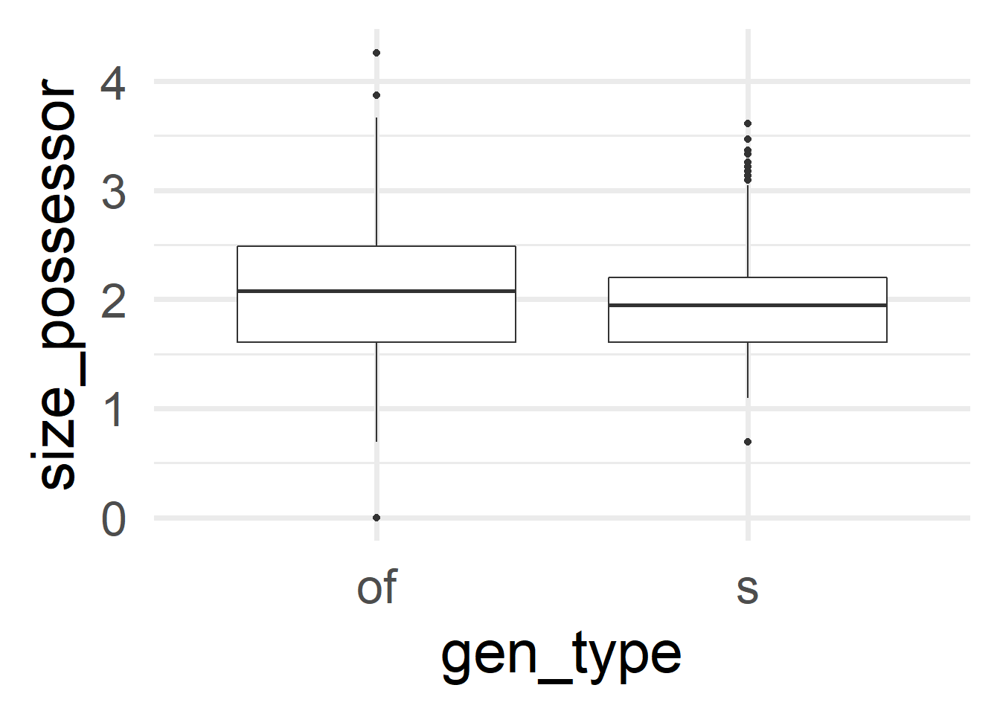
We can already see here that the tiniest and the longest Possessors tend to go with the of-genitive. Remember that size_possessor doesn’t contain the length in characters but its logarithm. Therefore, the minimum size of 0 corresponds to a character length of 1. Table 2 collects these examples for deeper inspection.
cd %>%
filter(size_possessor == 0) %>%
as_tibble() %>%
select(match, possessor) %>%
kbl() %>% kable_paper()| match | possessor |
|---|---|
| the primary decomposition of T | t |
| The constancy of P | p |
| The choice of P | p |
| the graph of F | f |
| the graph of F | f |
| the multiplicity of F | f |
| the graph of F | f |
| the values of S | s |
| the values of S | s |
| the image of L | l |
| the plane of L | l |
| the image of L | l |
Finally, we could also do some visualization. We could use barplots for the categorical variables, mosaic plots for the contingency table, histograms for the quantitative variables, scatterplots for the relationship between two quantitative variables or boxplots/violin plots to compare quantities and/or relate them to qualitative variables.
Barplots can be created with the geom_bar() function. The position argument controls whether the bars of different colors are stacked or put next to each other.
ggplot(cd, aes(x = gen_type, fill = possessor_type)) +
geom_bar(position = position_dodge()) +
scale_fill_manual(values = c("orange", "darkgreen"))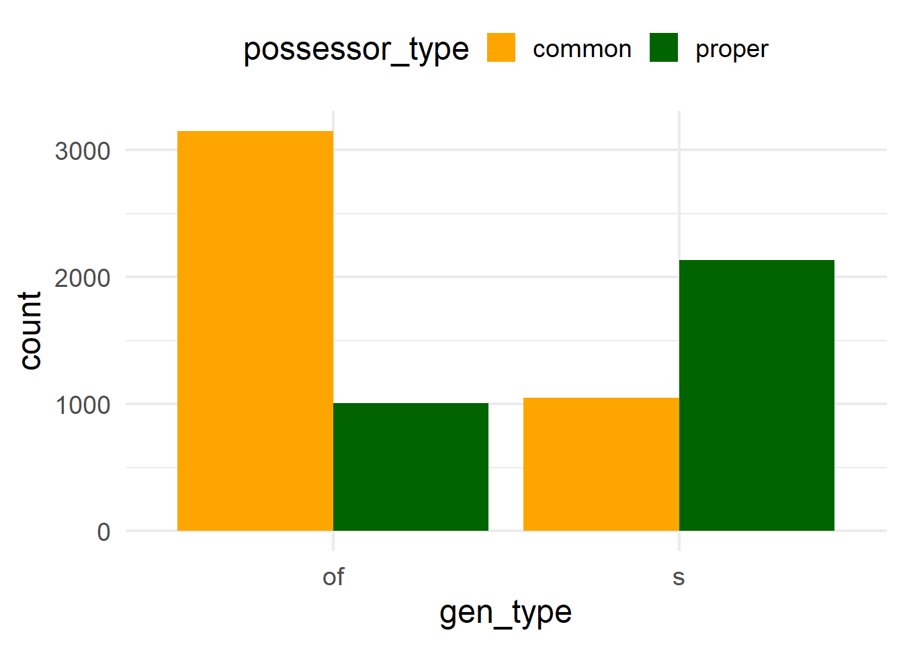
geom_col() instead.While the ggmosaic package offers a way of creating mosaic plots with ggplot2, graphics::mosaic() has the nice feature of shading the sections based on the residuals (with shade = TRUE). Red squares indicate that the frequency of a combination is significantly lower than expected (i.e. if the distribution was proportional), and blue squares, that the frequency is significantly higher than expected. In other words, you can already see if a pair of values of two categorical variables are “attracted” to each other. Here it is very clear that the Possessor types are not balanced across genitive variants: the common noun Possessor is much more attracted to the of-genitive, and the proper noun to the s-genitive.
mosaicplot(gen_type ~ possessor_type, data = cd, shade = TRUE)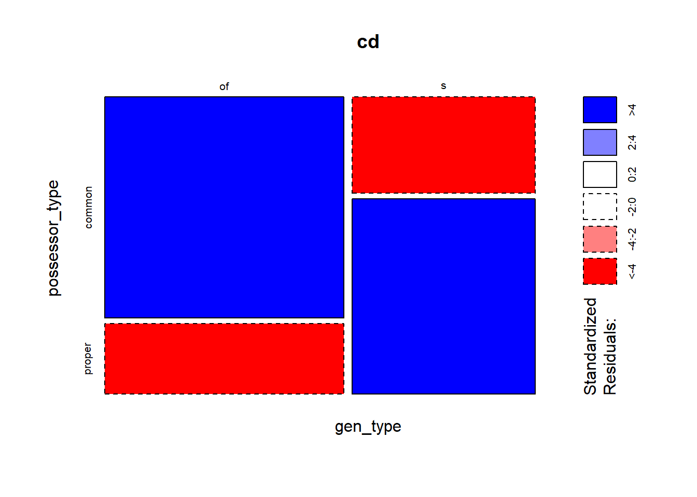
gen_type and the predictor possessor_type.Histograms can be generated with geom_histogram(); they show the frequencies of different values along a continuous scale.
ggplot(cd, aes(x = size_possessor)) +
geom_histogram()
ggplot(cd, aes(x = size_possessed)) +
geom_histogram()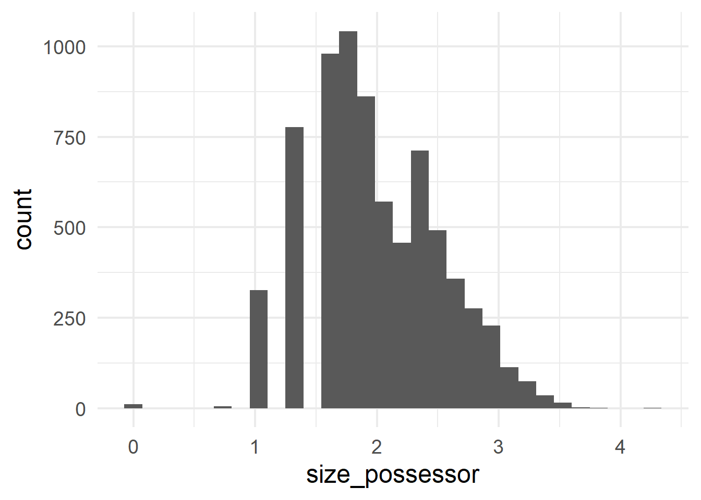
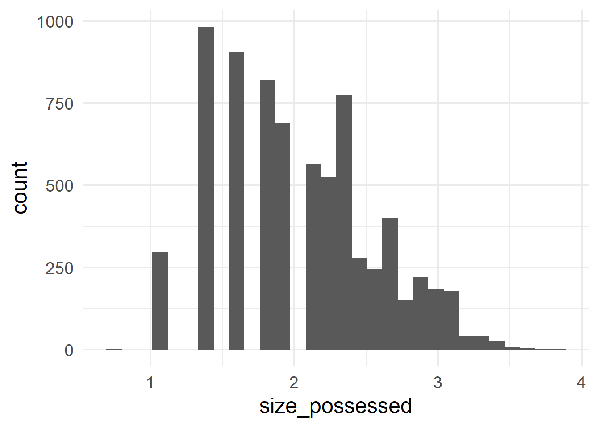
A scatterplot of points can contrast two quantitative variables; in this case the log-transformed slot sizes (Figure 4 (a)) and the original sizes in number of characters, retrieved with exp() (Figure 4 (b)).
ggplot(cd, aes(x = size_possessor, y = size_possessed)) +
geom_point(size = 3, alpha = 0.5)
ggplot(cd, aes(x = exp(size_possessor), y = exp(size_possessed))) +
geom_point(size = 3, alpha = 0.5) +
labs(x = "possessor", y = "possessed")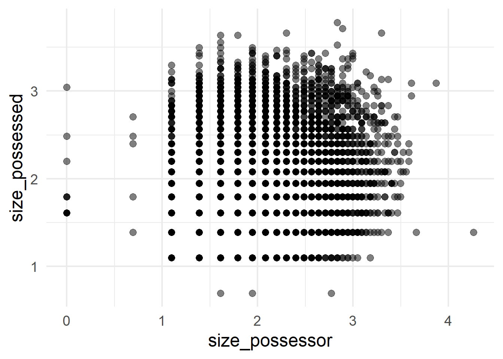
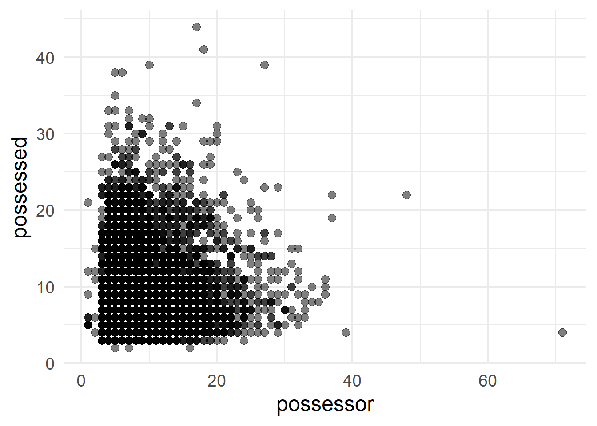
In order to compare the ranges of size_possessor and size_possessed in a violin plot, we need to turn the dataset into a long-form version, so that the value of possessor/possessed is another variable. For that we use pivot_longer(), the complement of pivot_wider(), with the names of the columns that we want to change and a few useful arguments. First, for the selection of columns, we can also use dplyr selectors such as starts_with(), which selects all columns that start with a given string. Then, names_to and values_to indicate the new names for the columns to which the original names of the columns (here size_possessor and size_possessed) and their values will go. In this case, with names_to = "slot", values_to = "size", each row of the original dataset will become two rows, and the columns size_possessor and size_possessed will have disappeared. Instead, there will be a column slot with values size_possessor and size_possessed, and a column size with the original values of that row for size_possessor and size_possessed respectively. This allows us to use slot as a variable for the ggplot aesthetics. Finally, the names_transform argument allows us to transform the values that will go into the name-column, i.e. slot. In particular, this stringr::str_remove() call will remove the “size_” prefix from size_possessed and size_possessor.
The function to draw a violin plot is geom_violin().
If you’re wondering why I use violin plots instead of boxplots, I invite you to read the article Same Stats, Different Graphs, by Justin Matejka and George Fitzmaurice.
And if you are interested in more advanced graphs, combining half-vioilin plots and half-boxplots or scatterplots, check out the {gghalves} package.
cd %>% as_tibble() %>%
select(starts_with("size_p"), gen_type) %>%
pivot_longer(starts_with("size"),
names_to = "slot", values_to = "size",
names_transform = ~ str_remove(.x, "size_")) %>%
ggplot(aes(x = slot, y = size, fill = gen_type)) +
geom_violin() +
scale_fill_manual(values = c("orange", "darkgreen"))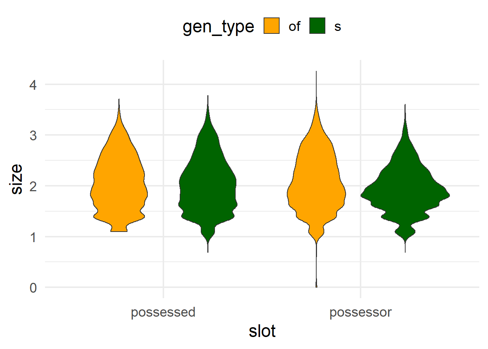
Conditional inference tree
The first analysis we’ll run is a conditional inference tree, which we’ll obtain with partykit::ctree(). The first argument is a formula, indicating on the left side of the tilde ~ the response variable or outcome, and on the right side the predictors, separated by +. The second argument is the dataset from which the variables are taken. The output is an object of class party, which can be stored on a file, if needed, with saveRDS().
cd_ctree <- ctree(gen_type ~ possessor_type + size_possessor + size_possessed + size_diff,
data = cd)The easiest way to inspect a tree is by plotting it, as shown in Figure 6.
plot(cd_ctree)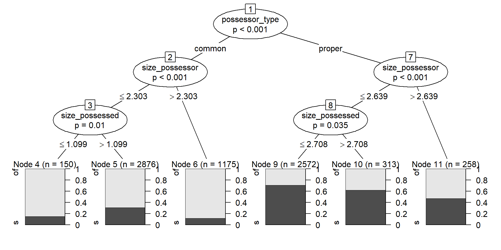
A conditional inference tree first tries to find a variable by which you can split the dataset in significantly different values, and then repeats the procedure iteratively until no other split returns significantly different groups. In the case of a classification task, i.e. when the outcome is categorical, the splits should have significantly different proportions of the success level.
Concretely, Figure 6 shows that the first split is given by possessor_type, followed by size_possessor and then size_possessed. That means that the largest significant difference is given between the observations where the Possessor is a common noun, in which the chances of of-genitive are substantially and significantly higher than those of s-genitive, against those in which the Possessor is a proper noun, which favor the s-genitive a bit more.
Within the split based on possessor_type, the next significant split is given by size_possessor. When the Possessor is a common noun, if its size is larger than 2.3026 (10 characters) the chances of the of-genitive variant increase in relation to observations where the Possessor has fewer characters. Notice than in both cases the of-variant is dominant, but the proportion is significantly different. Within the group with 10 characters or fewer, size_possessed is now relevant and the of-genitive is favored more when it is 1.0986 or lower (3 characters). Notice, however, that the size of the node is much smaller: whereas, within the occurrences with common noun possessor of 10 characters or fewer, more than 75% of those with a shorter Possessed constituent exhibit the of-genitive, in absolute numbers there are more longer Possessed constituents with the of-genitive.
The right side of the plot shows the significant splits within the cases with proper nouns in the Possessor slot: this time, if the possessor is longer, with size_possessor larger than 2.6391 (14 characters), the chances of the of-genitive variant also increase, becoming equal to those of the s-genitive within that group.
Plotting with the default method of a party object is straightforward and returns the information you want, but it doesn’t give you much room for manipulation. If the plotting space is too small, the different parts of the plot may overlap — if it’s way too small, you might even get a warning.
The ggparty offers a ggplot2 extension to plot objects from the partykit package. Designing the plot is now more complicated, but it gives you more freedom, in case you want to manipulate the labels, colors, sizes, etc. For a conditional tree such as the one shown in Figure 6, ggparty might be a bit of an overkill, but Figure 7 is an example in which I change the colors in the barplots and color the node labels based on the splitting variables.
A downside of ggparty is that it doesn’t automatically round the numerical values on the edges, but you can copy-paste the code in lines 5:12 to fix that in any other ggparty object (just make sure to change cd_party to the name of the ggparty object). I won’t explain the rest of the code; if you’re interested in the capabilities of the package, check out the vignette.
library(ggparty)
cd_party <- ggparty(cd_ctree)
round_edges <- function(break_label) {
rounded <- str_extract(break_label, "[0-9.]+") %>%
as.numeric() %>%
formatC(digits = 4)
str_replace(break_label, "[0-9.]+", rounded)
}
cd_party$data$breaks_label <- map(cd_party$data$breaks_label, round_edges)
cd_party + # ggparty object
geom_edge() + # add edges
geom_edge_label(size = 4) + # add edge labels
geom_node_label( # add and edit node labels
mapping = aes(col = splitvar),
line_list = list(
aes(label = splitvar),
aes(label = sprintf("p = %.2e", p.value))
),
line_gpar = list(
list(size = 15),
list(size = 10)
),
ids = "inner") +
geom_node_label( # add node size to terminal nodes
aes(label = paste("N= ", nodesize)),
ids = "terminal"
) +
geom_node_plot( # add plots
gglist = list(
geom_bar(aes(x = "", fill = gen_type),
position = position_fill()),
labs(y = "Proportion", x = NULL,
fill = "Genitive variant"),
scale_fill_manual(values = c("orange", "darkgreen")),
theme_minimal(base_size = 15)),
shared_axis_label = TRUE) +
scale_color_brewer(palette = "Dark2", guide = "none") # set node labels color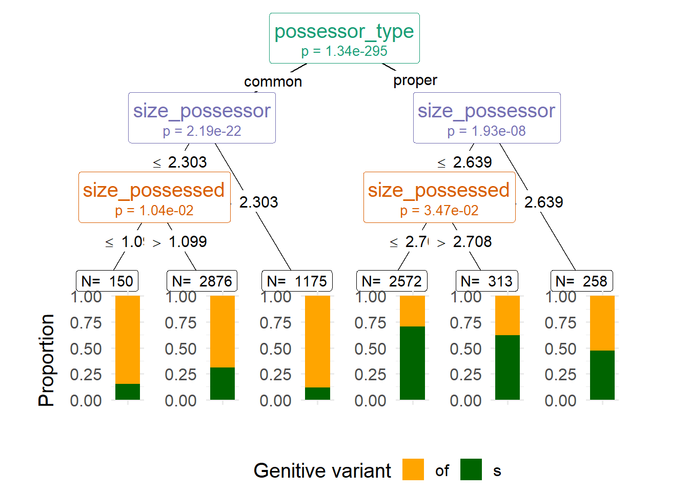
Conditional trees in relation to other techniques
Unlike logistic regression analysis, conditional inference trees have the ability to deal with collinearity. This is the case where two variables basically do the same thing, or one variable has the same effect as a combination of two other variables. Therefore, we can use a conditional tree to see which predictors to use in the regression model. For example, in our dataset size_difference is redundant with size_possessor and size_possessed because it depends on them, and Figure 6 tells us that we can safely discard size_difference because it doesn’t have a significant effect.
On the other hand, conditional trees look at one variable at a time, and once a split is performed, the effect of the following variables is examined in relation to the split dataset. That is how the effect of size_possessor is different in the subset where possessor_type is common compared to the subset where possessor_type is proper, and how size_possessed is only a relevant predictor in certain splits. In contrast, regression models look at the effect of each variable on the whole dataset, while accounting for the effects of the rest of the variables.
Finally, the conditional tree chooses the most relevant variable but does not tell us how close other variables were — it seems that size_possessor is not as effective as possessor_type when splitting the full dataset, but how less effective is it? In order to obtain a ranking of importance of the variables, we can run random forests. This technique generates a large number of trees with different subsets of the dataset (different subsets of rows and of columns) and checks which variable takes the first place in each of the trees. This is a handy technique when we have many different variables, but it is not very time-efficient and therefore it’s overkill for this dataset.
Logistic regression analysis
Based on the results of the conditional tree, we can decide which predictors to use in the logistic regression model. We’ll run it with lme4::glmer(), which was loaded when we loaded {lme4Test}. We’ll obtain a summary of the results with the summary() method, which, if {lme4Test} is loaded, will include p-values.
lme4::glmer() is a function for “mixed-effects generalized linear models”; when run with the argument family = binomial, it runs mixed-effects logistic regression. A mixed effects model combines fixed effects and random effects. For a model with only fixed effects, we can use the base R function glm(, family = binomial).
A fixed effect is a predictor that we are interested in, such as possessor_type and size_possessor. We want to know their effect on the response variable and we expect the values attested in our sample (our dataset) to represent the values that occur in the population (language in general). A random effect, in contrast, is a variable that we want to take into account but whose effect on the response variable we are not interested in. The values they take in the sample are only a sample of those that can be attested in the population, and might not be replicable in a different dataset. Examples in linguistic studies are the speaker, the topic and sometimes lexical effects. In our case, we can use the filename (source) and the register (comp) as a proxy for speakers and topic. We want to take them into account because it could be that a certain speaker prefers to use one variant over the other, but we cannot take them as fixed effects because it’s unlikely that a study in a different dataset will have the same speakers. A different dataset, however, can certainly have the same values of possessor_type and comparable values in size_possessor and size_possessed.
The first argument of lme4::glmer() is a formula, indicating the response variable and the predictors, as used for partykit::ctree().
y ~ x1 + x2:yin function of main effectsx1andx2
However, for mixed-effects models we can use an extended notation to refer to interactions and random effects.
Interactions are cases where the effect of a variable depends on the effect on another variable. For example, that would be the case if a higher size_possessor favors of more intensely when possessor_type is common than when it is proper. It could also be the case that a higher size_possessor favors of when possessor_type is common but disfavors it when it is proper.
y ~ x1 + x2 + x1:x2:yin function of main effectsx1andx2and their interaction
y ~ x1 * x2:x1 * x2is short forx1 + x2 + x1:x2
y ~ (x1 + x2 + x3)^2:yin function of main effectsx1,x2, andx3and all their two-way interactions; short fory ~ x1 + x2 + x3 + x1:x2 + x1:x3 + x2:x3
Random effects include random intercepts and random slopes. A random intercept would represent, for this dataset, that different speakers have different baseline preferences for one variant or the other. A random slope for a given predictor, in contrast, indicates that the same predictor may have different effects for different speakers, e.g. that the effect size of size_possessor changes somewhat across speakers.
y ~ x1 + (1 | r1): random intercepts forr1
y ~ x1 + (1 + x1 | r1): random intercepts and randomx1-slopes forr1
y ~ x1 + (x1 | r1): same as (= short notation) previous formula
Random effects are always crossed but can also be nested, when the names of the levels make the nesting clear. In our dataset, source is nested within comp because the level names of source are unique across levels of comp: there is no file name that can belong to different registers. R is smart enough to realize this without us needing to make it explicit.
y ~ x1 + (1 | r1) + (1 | r2): random intercepts for bothr1andr2
y ~ x1 + (1 | r1) + (1 | r1:r2): explicit nesting ofr2inr1; the analysis will treat the same-name levels ofr2within different levels ofr1as different levels.
Maximal model
The first model we fit is a maximal model, using all the predictors suggested by the conditional tree. Because complex mixed-effect logistic regression models often have a hard time trying to converge, we add a lme4::glmerControl() call to help it. Here we set the optimizer to “bobyqa”, but we could also increase the number of iteration with the argument optCtr = list(maxfun = 100000).
cd_glmer <- glmer(
gen_type ~ (possessor_type + size_possessor + size_possessed)^2 +
(1 | comp) + (1 | source),
family = "binomial", data = cd,
control = glmerControl(optimizer = "bobyqa")
)
summary(cd_glmer) %>%
print(correlation = FALSE)Generalized linear mixed model fit by maximum likelihood (Laplace
Approximation) [glmerMod]
Family: binomial ( logit )
Formula: gen_type ~ (possessor_type + size_possessor + size_possessed)^2 +
(1 | comp) + (1 | source)
Data: cd
Control: glmerControl(optimizer = "bobyqa")
AIC BIC logLik deviance df.resid
7879 7941 -3931 7861 7335
Scaled residuals:
Min 1Q Median 3Q Max
-4.630 -0.597 -0.266 0.622 5.265
Random effects:
Groups Name Variance Std.Dev.
source (Intercept) 0.793 0.891
comp (Intercept) 0.304 0.552
Number of obs: 7344, groups: source, 499; comp, 15
Fixed effects:
Estimate Std. Error z value Pr(>|z|)
(Intercept) -0.6953 0.5311 -1.31 0.190
possessor_typeproper 2.5731 0.3299 7.80 6.2e-15 ***
size_possessor -0.4486 0.2510 -1.79 0.074 .
size_possessed 0.4472 0.2329 1.92 0.055 .
possessor_typeproper:size_possessor 0.0369 0.1240 0.30 0.766
possessor_typeproper:size_possessed -0.2811 0.1130 -2.49 0.013 *
size_possessor:size_possessed -0.1228 0.1127 -1.09 0.276
---
Signif. codes: 0 '***' 0.001 '**' 0.01 '*' 0.05 '.' 0.1 ' ' 1For the interpretation of the model, we want to look at:
The AIC value: the lower, the better. We can use it to compare models to each other.
The variance of the random effects: if it is not 0, it means we should keep them.
The p-values and estimates of the intercept and the effects. We do not care about non-significant effects, so we might want to try a new model without those predictors.
An useful way to check the significance of a predictor on the model is to run different models, each of which has removed one predictor, and compare them to the model with all the predictors. With the likelihood ratio test (LRT) we can see if removing anything from the model makes it significantly worse. We will do this with one handy function in the next section.
While p-values and LRT tests are useful statistical guides when selecting or discarding predictors, your selection may also be theoretically motivated. Regardless of these values, if a certain predictor was significant in previous research, you can decide to keep it in your models.
Removing one predictor
The function afex::mixed() can take a model, run different iterations in which one predictor was removed, and compare if the model without a predictor is significantly worse than the model with all predictors. For that comparison we’ll use likelihood ratio (LRT).
cd_glmer_lrt <- mixed(
gen_type ~ (possessor_type + size_possessor + size_possessed)^2 +
(1 | comp) + (1 | source),
family = "binomial", data = cd,
method = "LRT",
control = glmerControl(optimizer = "bobyqa")
)Contrasts set to contr.sum for the following variables: gen_type, possessor_type, comp, sourceNumerical variables NOT centered on 0: size_possessor, size_possessed
If in interactions, interpretation of lower order (e.g., main) effects difficult.The call to mixed() sends us a warning about the distribution of our numerical variables. This is useful but we don’t need to heed it as long as we don’t try to interpret the main effects of variables in interactions.
print(cd_glmer_lrt)Mixed Model Anova Table (Type 3 tests, LRT-method)
Model: gen_type ~ (possessor_type + size_possessor + size_possessed)^2 +
Model: (1 | comp) + (1 | source)
Data: cd
Df full model: 9
Effect df Chisq p.value
1 possessor_type 1 61.26 *** <.001
2 size_possessor 1 3.14 + .076
3 size_possessed 1 1.72 .190
4 possessor_type:size_possessor 1 0.09 .765
5 possessor_type:size_possessed 1 6.13 * .013
6 size_possessor:size_possessed 1 1.18 .278
---
Signif. codes: 0 '***' 0.001 '**' 0.01 '*' 0.05 '+' 0.1 ' ' 1The output confirms that possessor_type and its interaction with size_possessed are significant. We can interpret as well that the other two interactions are not significant and must be dropped. However, we don’t know if the main effect of size_possessor is significant, because it’s being distorted by the interactions in the model. Therefore, we will try a new model with possessor_type, size_possessor, size_possessed and the interaction possessor_type:size_possessed.
If you model an interaction, you also have to keep the main effects of the predictors that participate in the interaction.
Second model
Since the new model is not as complex, we don’t need glmerControl() to help it converge.
cd_glmer2 <- glmer(
gen_type ~ possessor_type + size_possessor + size_possessed +
possessor_type:size_possessed +
(1 | comp) + (1 | source),
family = "binomial", data = cd
)
summary(cd_glmer2) %>%
print(correlation = FALSE)Generalized linear mixed model fit by maximum likelihood (Laplace
Approximation) [glmerMod]
Family: binomial ( logit )
Formula: gen_type ~ possessor_type + size_possessor + size_possessed +
possessor_type:size_possessed + (1 | comp) + (1 | source)
Data: cd
AIC BIC logLik deviance df.resid
7877 7925 -3931 7863 7337
Scaled residuals:
Min 1Q Median 3Q Max
-4.632 -0.597 -0.267 0.621 5.332
Random effects:
Groups Name Variance Std.Dev.
source (Intercept) 0.794 0.891
comp (Intercept) 0.306 0.553
Number of obs: 7344, groups: source, 499; comp, 15
Fixed effects:
Estimate Std. Error z value Pr(>|z|)
(Intercept) -0.2284 0.2478 -0.92 0.3567
possessor_typeproper 2.6650 0.2392 11.14 <2e-16 ***
size_possessor -0.6880 0.0625 -11.01 <2e-16 ***
size_possessed 0.2055 0.0759 2.71 0.0068 **
possessor_typeproper:size_possessed -0.2893 0.1120 -2.58 0.0098 **
---
Signif. codes: 0 '***' 0.001 '**' 0.01 '*' 0.05 '.' 0.1 ' ' 1In this model, the AIC value is slightly lower (so, the model is better) and the variance of the random effects is larger than zero. In addition, all the current predictors and the interaction are significant.
We could still run afex::mixed() to check whether removing any predictor would make the model worse.
cd_glmer2_lrt <- mixed(
gen_type ~ possessor_type + size_possessor + size_possessed +
possessor_type:size_possessed +
(1 | comp) + (1 | source),
family = "binomial", data = cd,
method = "LRT")
print(cd_glmer2_lrt)Mixed Model Anova Table (Type 3 tests, LRT-method)
Model: gen_type ~ possessor_type + size_possessor + size_possessed +
Model: possessor_type:size_possessed + (1 | comp) + (1 | source)
Data: cd
Df full model: 7
Effect df Chisq p.value
1 possessor_type 1 126.10 *** <.001
2 size_possessor 1 125.08 *** <.001
3 size_possessed 1 1.11 .292
4 possessor_type:size_possessed 1 6.62 * .010
---
Signif. codes: 0 '***' 0.001 '**' 0.01 '*' 0.05 '+' 0.1 ' ' 1Indeed, the only predictor that we could “safely” remove is size_possessed, but we need it in order to keep the significant interaction in which it participates.
Concordance index C
In order to assess the strength of the predictions of the models, we can use the concordance index C, computed with Hmisc::somers2(). The first argument is the fitted values of the models (obtained with predict()), whereas the second argument is a numerical form of the observed outcomes.
# maximal model
Hmisc::somers2(
predict(cd_glmer), as.numeric(cd$gen_type)-1
)["C"] C
0.8494 # minimal model
Hmisc::somers2(
predict(cd_glmer2), as.numeric(cd$gen_type)-1
)["C"] C
0.8494 # minimal model without random effects in the prediction
Hmisc::somers2(
predict(cd_glmer2, re.form = NA), as.numeric(cd$gen_type)-1
)["C"] C
0.7511 With basic predict() it’s possible to obtain the predictions both taking the random effects into account and excluding them. By default, they are taken into account.
If you use tidymodels for modelling, this will not be possible and you will have to take some differences into account:
The predicted value is the reference value.
There is no “concordance index C” measure in yardstick, the tidymodels package for evaluation; instead, there is a metric computing “the area under the ROC curve” (
yardstick::roc_auc()), which is the same thing!Predictions are always made based on fixed effects only (since the values of your random effects are not supposed to be present in the data you’re predicting).
Interpretation
One of the first things we see in the output is that, when the Possessor is a proper noun and the Possesses slot has one character, the chances of the s-variant are significantly higher — about 14.3677 times more likely than the alternative, all other things being equal.
Moreover the larger the Possessed constituent, the higher the chances of the s-variant. In contrast, all other things being equal, the larger the Possessor constituent, the lower the chances of the s-variant. This is consistent with the theoretical assumption that the longer constituent is placed at the end: the longer a constituent, the higher the chances of a construction that places it at the end.
However, that effect of the size of the Possessed constituent is valid when the Possessor slot is a common noun, which in general favors the of construction (as indicated by the Intercept, although it is not significant). In contrast, when the Possessor is a proper noun (which favors the s-construction, all other things being equal), a larger Possessed constituent actually doesn’t favor the s construction as much.
You can always retrieve the coefficients with coefficients(summary(model)), which is a dataframe. For example coefficients(summary(cd_glmer2))["possessor_typeproper","Estimate"] returns the estimate coefficient of possessor_type. Adding exp(), you can retrieve the odds of the s-variant over the of-variant when the Possessor is a proper noun, all other things being equal.
Plotting effects
Figure 8 plots the effects in the models. Figure 8 (a) shows that the probabilities of the s-genitive decrease as the size of the Possessor constituent increases. These probabilities take the other predictors into account by assuming their typical cases.
Figure 8 (b) illustrates the interaction between the type of the Possessor and the size of the Possessed constituent. As we saw in the printed output of the model, when the Possessor is a common noun, a larger size of the Possessed constituent increases the probabilities of the s-genitive, whereas the effect inverts when the Possessor is a proper noun. In addition, we see that the probability of the s-genitive is always higher for the proper noun, regardless of the size of the Possessed constituent.
ggpredict(cd_glmer2, "size_possessor") %>%
plot()
ggpredict(cd_glmer2, c("size_possessed", "possessor_type")) %>%
plot()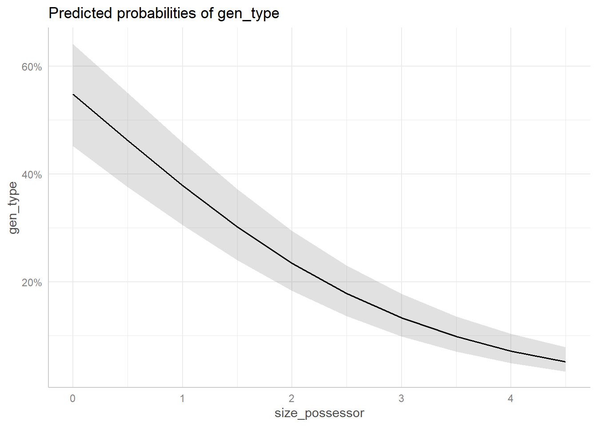
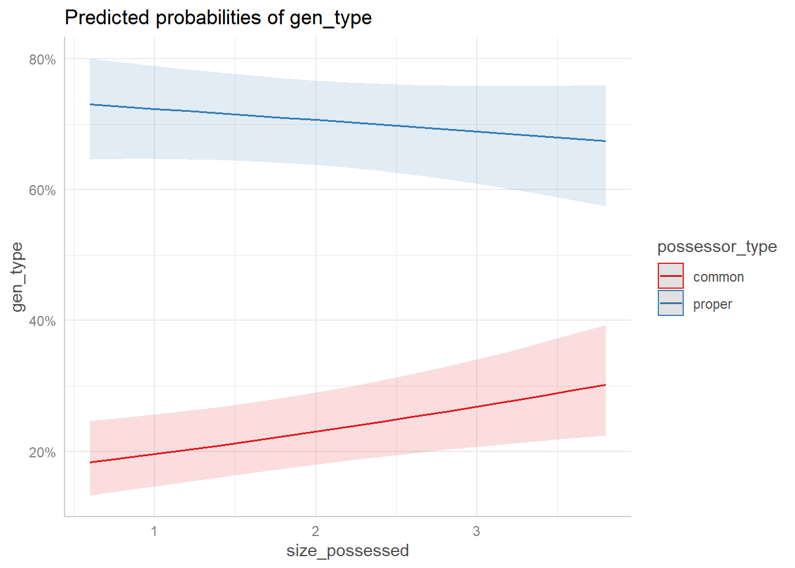
Easystats
In this final section we will showcase some functions from the easystats group of packages for reporting models.
Notice that the merDeriv package needs to be installed to compute confidence intervals for random effect parameters.
ALSO: report() is printing twice as much text as it should for models with multiple parameters, be careful!
report(cd_glmer2)We fitted a logistic mixed model (estimated using ML and Nelder-Mead optimizer)
to predict gen_type with possessor_type (formula: gen_type ~ possessor_type +
size_possessor + size_possessed + possessor_type:size_possessed). The model
included comp as random effects (formula: list(~1 | comp, ~1 | source)). The
model's total explanatory power is substantial (conditional R2 = 0.41) and the
part related to the fixed effects alone (marginal R2) is of 0.22. The model's
intercept, corresponding to possessor_type = common, is at -0.23 (95% CI
[-0.71, 0.26], p = 0.357). Within this model:
- The effect of possessor type [proper] is statistically significant and
positive (beta = 2.66, 95% CI [2.20, 3.13], p < .001; Std. beta = 2.07, 95% CI
[1.94, 2.20])
- The effect of size possessor is statistically significant and negative (beta
= -0.69, 95% CI [-0.81, -0.57], p < .001; Std. beta = -0.35, 95% CI [-0.42,
-0.29])
- The effect of size possessed is statistically significant and positive (beta
= 0.21, 95% CI [0.06, 0.35], p = 0.007; Std. beta = 0.11, 95% CI [0.03, 0.19])
- The interaction effect of size possessed on possessor type [proper] is
statistically significant and negative (beta = -0.29, 95% CI [-0.51, -0.07], p
= 0.010; Std. beta = -0.15, 95% CI [-0.27, -0.04])
Standardized parameters were obtained by fitting the model on a standardized
version of the dataset. 95% Confidence Intervals (CIs) and p-values were
computed using a Wald z-distribution approximation., We fitted a logistic mixed
model (estimated using ML and Nelder-Mead optimizer) to predict gen_type with
size_possessor (formula: gen_type ~ possessor_type + size_possessor +
size_possessed + possessor_type:size_possessed). The model included comp as
random effects (formula: list(~1 | comp, ~1 | source)). The model's total
explanatory power is substantial (conditional R2 = 0.41) and the part related
to the fixed effects alone (marginal R2) is of 0.22. The model's intercept,
corresponding to size_possessor = 0, is at -0.23 (95% CI [-0.71, 0.26], p =
0.357). Within this model:
- The effect of possessor type [proper] is statistically significant and
positive (beta = 2.66, 95% CI [2.20, 3.13], p < .001; Std. beta = 2.07, 95% CI
[1.94, 2.20])
- The effect of size possessor is statistically significant and negative (beta
= -0.69, 95% CI [-0.81, -0.57], p < .001; Std. beta = -0.35, 95% CI [-0.42,
-0.29])
- The effect of size possessed is statistically significant and positive (beta
= 0.21, 95% CI [0.06, 0.35], p = 0.007; Std. beta = 0.11, 95% CI [0.03, 0.19])
- The interaction effect of size possessed on possessor type [proper] is
statistically significant and negative (beta = -0.29, 95% CI [-0.51, -0.07], p
= 0.010; Std. beta = -0.15, 95% CI [-0.27, -0.04])
Standardized parameters were obtained by fitting the model on a standardized
version of the dataset. 95% Confidence Intervals (CIs) and p-values were
computed using a Wald z-distribution approximation. and We fitted a logistic
mixed model (estimated using ML and Nelder-Mead optimizer) to predict gen_type
with size_possessed (formula: gen_type ~ possessor_type + size_possessor +
size_possessed + possessor_type:size_possessed). The model included comp as
random effects (formula: list(~1 | comp, ~1 | source)). The model's total
explanatory power is substantial (conditional R2 = 0.41) and the part related
to the fixed effects alone (marginal R2) is of 0.22. The model's intercept,
corresponding to size_possessed = 0, is at -0.23 (95% CI [-0.71, 0.26], p =
0.357). Within this model:
- The effect of possessor type [proper] is statistically significant and
positive (beta = 2.66, 95% CI [2.20, 3.13], p < .001; Std. beta = 2.07, 95% CI
[1.94, 2.20])
- The effect of size possessor is statistically significant and negative (beta
= -0.69, 95% CI [-0.81, -0.57], p < .001; Std. beta = -0.35, 95% CI [-0.42,
-0.29])
- The effect of size possessed is statistically significant and positive (beta
= 0.21, 95% CI [0.06, 0.35], p = 0.007; Std. beta = 0.11, 95% CI [0.03, 0.19])
- The interaction effect of size possessed on possessor type [proper] is
statistically significant and negative (beta = -0.29, 95% CI [-0.51, -0.07], p
= 0.010; Std. beta = -0.15, 95% CI [-0.27, -0.04])
Standardized parameters were obtained by fitting the model on a standardized
version of the dataset. 95% Confidence Intervals (CIs) and p-values were
computed using a Wald z-distribution approximation.model_parameters(cd_glmer2, effects = "fixed") %>%
print_md()| Parameter | Log-Odds | SE | 95% CI | z | p |
|---|---|---|---|---|---|
| (Intercept) | -0.23 | 0.25 | (-0.71, 0.26) | -0.92 | 0.357 |
| possessor type (proper) | 2.66 | 0.24 | (2.20, 3.13) | 11.14 | < .001 |
| size possessor | -0.69 | 0.06 | (-0.81, -0.57) | -11.01 | < .001 |
| size possessed | 0.21 | 0.08 | (0.06, 0.35) | 2.71 | 0.007 |
| possessor type (proper) * size possessed | -0.29 | 0.11 | (-0.51, -0.07) | -2.58 | 0.010 |
The outliers can be further inspected with cd %>% filter(check_outliers(cd_glmer2)).
The easystats packages also offer ways of comparing different models. parameters::compare_models() compares the effect size of the parameters, whereas performance::compare_performance() compares them across metrics. Both objects have plot() methods.
param_comparison <- compare_models("maximal" = cd_glmer,
"minimal" = cd_glmer2)
performance_comparison <- compare_performance("maximal" = cd_glmer,
"minimal" = cd_glmer2,
metrics = "common"
)print_md(param_comparison)| Parameter | maximal | minimal |
|---|---|---|
| (Intercept) | -0.70 (-1.74, 0.35) | -0.23 (-0.71, 0.26) |
| possessor type (proper) | 2.57 (1.93, 3.22) | 2.66 (2.20, 3.13) |
| size possessor | -0.45 (-0.94, 0.04) | -0.69 (-0.81, -0.57) |
| size possessed | 0.45 (-9.35e-03, 0.90) | 0.21 (0.06, 0.35) |
| possessor type (proper) * size possessed | -0.28 (-0.50, -0.06) | -0.29 (-0.51, -0.07) |
| possessor type (proper) * size possessor | 0.04 (-0.21, 0.28) | |
| size possessor * size possessed | -0.12 (-0.34, 0.10) | |
| Observations | 7344 | 7344 |
plot(param_comparison)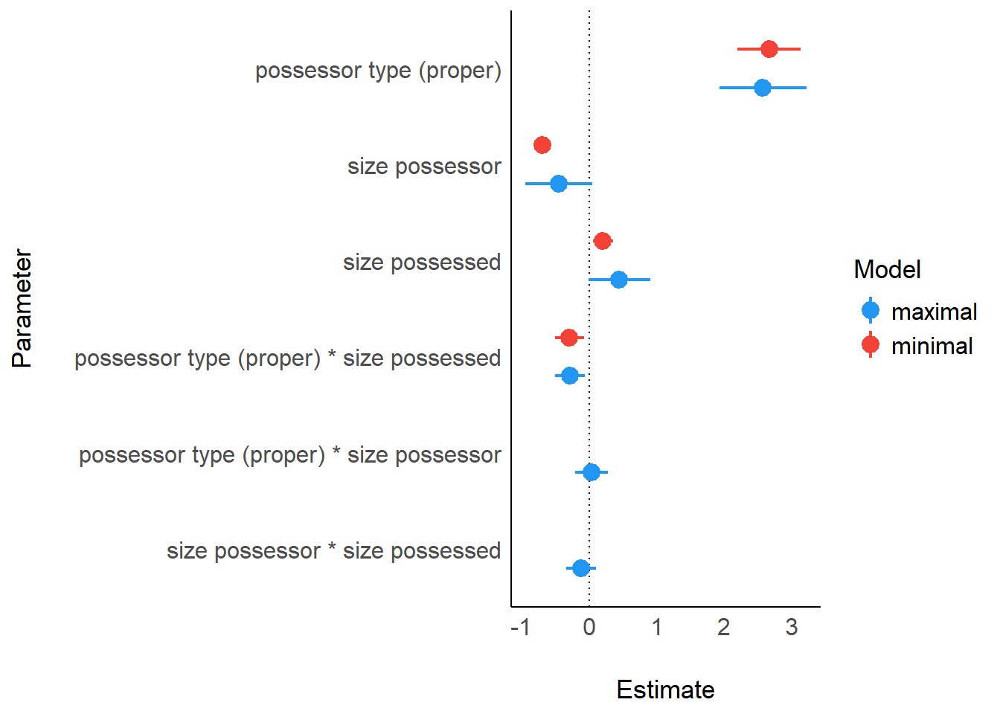
print_md(performance_comparison)| Name | Model | AIC (weights) | BIC (weights) | R2 (cond.) | R2 (marg.) | ICC | RMSE |
|---|---|---|---|---|---|---|---|
| cd_glmer | glmerMod | 7879.3 (0.21) | 7941.4 (<.001) | 0.41 | 0.22 | 0.25 | 0.40 |
| cd_glmer2 | glmerMod | 7876.6 (0.79) | 7924.9 (>.999) | 0.41 | 0.22 | 0.25 | 0.40 |
plot(performance_comparison)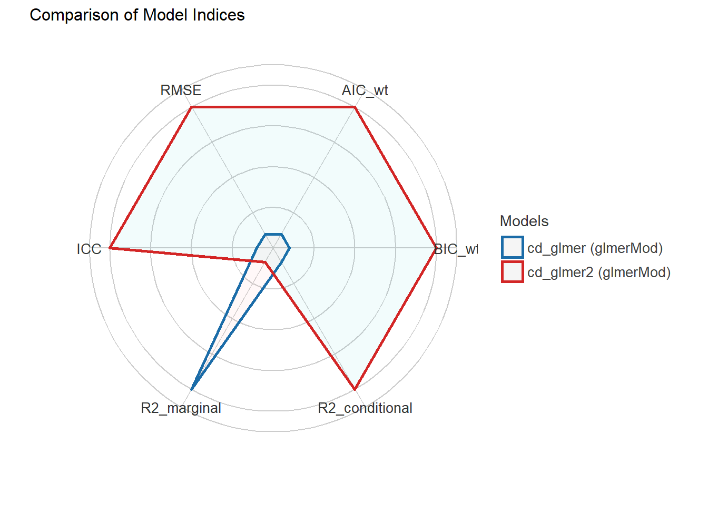